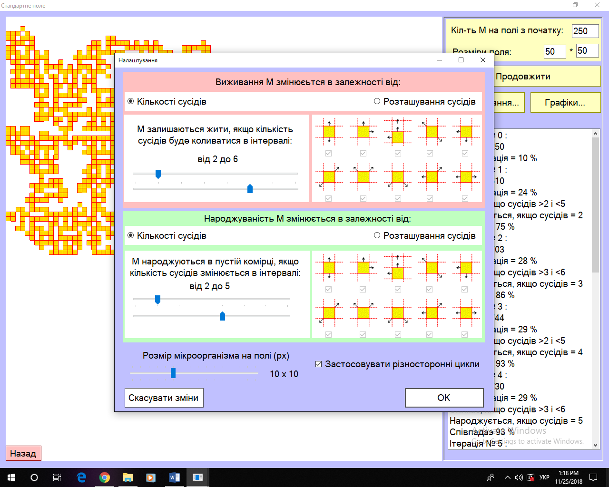
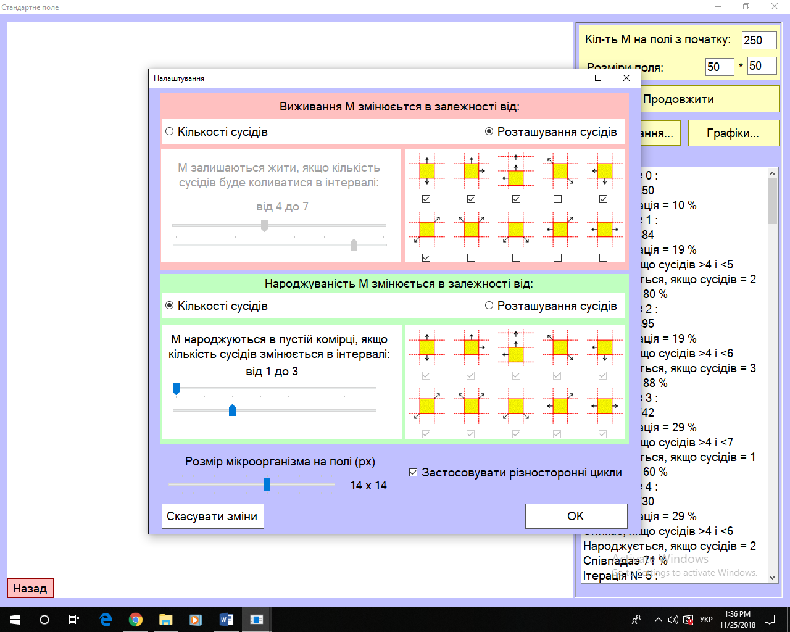
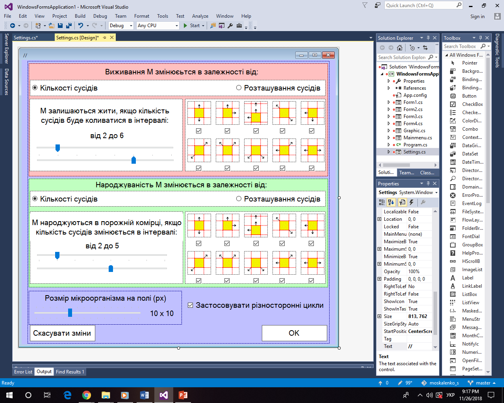
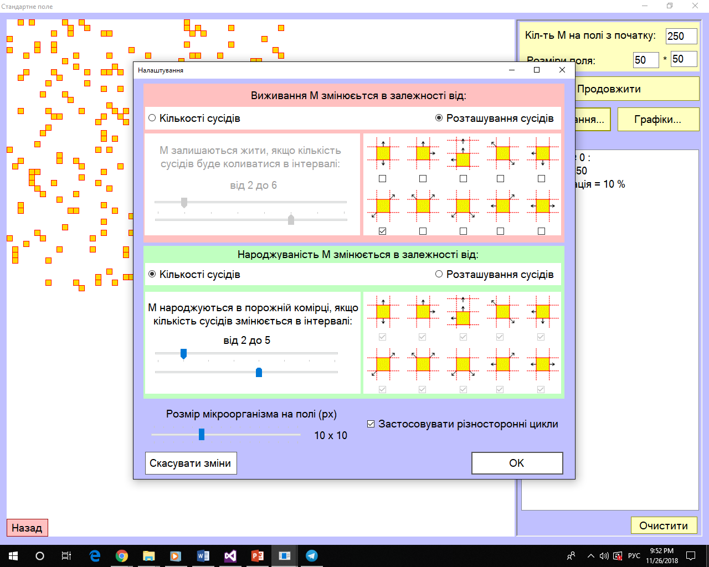
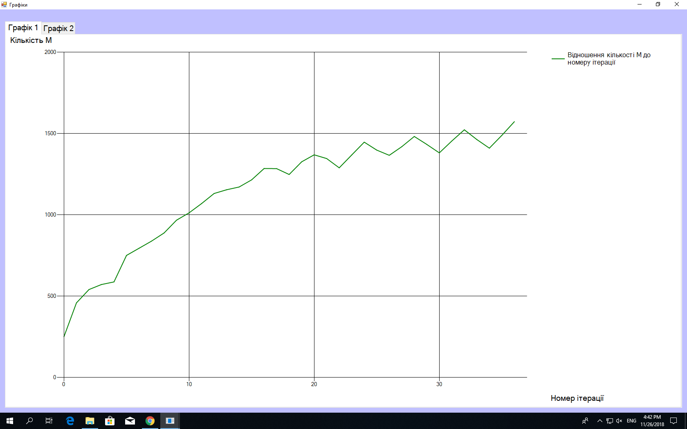
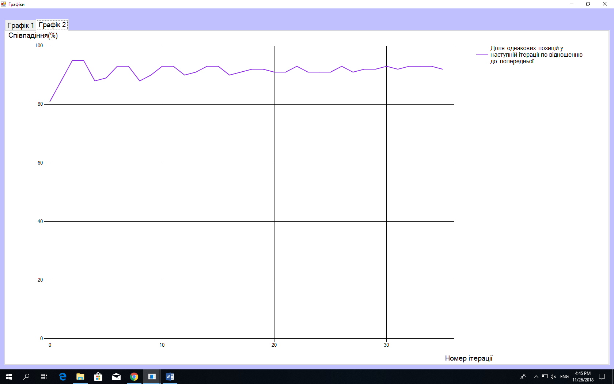
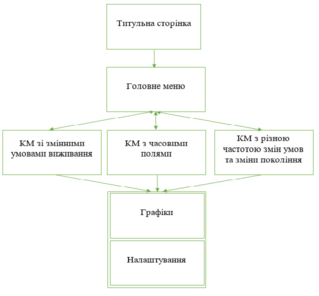

Дніпровський ліцей інформаційних технологій
при Дніпровському національному університеті
імені Олеся Гончара
Випускна робота
Моделювання еволюції колонії мікроорганізмів на площині в режимі зміни умов виживання мікроорганізмів
Виконавець:
Ліцеїст 11 – Ф – 1 класу
Москаленко Сергій
Науковий керівник:
Ентін Й. А
Дніпро
2018
ЗМІСТ:
Формулювання задачі.
Є прямокутник, заповнений квадратами. У кожному квадраті може бути мікроорганізм, який виживає і може розмножуватися, якщо в нього не більше від N1 і не менше від N2 сусідів, N 1< N 2. Початкову кількість мікроорганізмів у прямокутнику а також інтервал часу між тактами (змінами стану колонії мікроорганізмів) задаємо. Далі умови виживання коливаються. Треба дослідити вплив таких змін на еволюцію колонії мікроорганізм.
Мета
Дослідити зв’язок між частотою змін умов виживання окремих М та існуванням КМ.
Актуальність
Моделювання впливу коливань зовнішніх умов на стан КМ є корисним для боротьби зі шкідливими вірусами. Моделюючи вплив зміни умов виживання на еволюцію колонії, встановлюємо небезпечні режими (колонія не вимирає).
КМ – Колонія Мікроорганізмів;
М – мікроорганізм або мікроорганізми;
Цикл життя – це прохід однієї ітерації головного таймера у будь-якому виді КМ;
Часове поле – це ділянка одного із вертикальних полів в КМ з часовими полями.
За основу програми була взята «Гра життя» Джона Конвея. Місце дії гри — «всесвіт» — являє собою площину, поділену на клітинки. Кожна клітинка може перебувати в одному з двох станів: бути живою або мертвою. Клітинка має вісім сусідів. Початкове розташування клітин – це перше покоління. Кожне наступне покоління утворюється на основі попереднього за правилами:
якщо в живої клітини два чи три сусіди – то вона лишається жити;
якщо в живої клітини один чи немає сусідів – то вона помирає від «самотності»;
якщо в живої клітини чотири або більше сусідів – вона помирає від «перенаселення»;
якщо в мертвої клітини три сусіди – то вона оживає.
За цих умов Конвей дослідив, що конфігурації, які протягом значного проміжку часу змінюються, закінчують еволюцію одним із трьох наступних способів:
повністю зникають;
переходять у стійку конфігурацію та перестають змінюватися взагалі;
виходять у коливальний режим з певним періодом.
У проекті є три практичні частини. В кожній з частин є кнопки «Розпочати», «Налаштування» і «Графіки».
Щоб передати нові налаштування з однієї форми на іншу я використав змінні (на формі, де є КМ) та функції(на формі налаштувань).
Всі змінні, що використовуються для налаштувань у кожній формі:
//змінні, що відповідають за налаштування:
bool a1;//true: виживання по кількості
//false: виживання по розташуванню
bool[] v;
int vmin;
int vmax;
bool b1;//true: народження по кількості
//false: народження по розташуванню
bool[] b;
int bmin;
int bmax;
int size_micr;
bool diff_cycles;
1.Визначення умов виживання.
Якщо вибрано виживання в залежності від кількості сусідів, стає доступним налаштування «М залишаються у живих, якщо кількість сусідів належить вибраному інтервалу умов виживання» (див. рис. 1).

Рис. 1. Виживання мікроорганізмів в залежності від кількості сусідів
Це означає, що при кожній ітерації проміжок кількості сусідів буде змінюватися у відведених межах. Наприклад, на верхньому trackBar (рис. 1) – нижня границя виживання, що коливається від двох сусідів до середнього арифметичного між максимальним і мінімальним значеннями, тобто до трьох, а максимальна - від п’яти до шести включно. В даному випадку М виживе, якщо кількість сусідів більше від [2; 4) і менше ніж (4; 6].
Якщо виживання залежить від розташування сусідів, доступне налаштування, показане на рис. 2. Тут все очевидно: виділені жовтим checkBox, по черзі перевіряються;

Рис. 2. Виживання в залежності від взаємного розташування мікроорганізмів.
У коді для виключення невибраних комбінацій є обмежувач:
int id_limit(int id, bool p)
{//змінна 'id' – перевіряємо зміну вводного індексу
repeat:
if (id == 1 && ((v[0] == false && p == false) || (b[0] == false && p == true)))
id++;//якщо id = 1 – змінюємо на 2
if (id == 2 && ((v[1] == false && p == false) || (b[1] == false && p == true)))
id++;//якщо id = 2 – змінюємо на 3
if (id == 3 && ((v[2] == false && p == false) || (b[2] == false && p == true)))
id++;//якщо id = 3 – змінюємо на 4
if (id == 4 && ((v[3] == false && p == false) || (b[3] == false && p == true)))
id++;//якщо id = 4 – змінюємо на 5
if (id == 5 && ((v[4] == false && p == false) || (b[4] == false && p == true)))
id++;//якщо id = 5 – змінюємо на 6
if (id == 6 && ((v[5] == false && p == false) || (b[5] == false && p == true)))
id++;//якщо id = 6 – змінюємо на 7
if (id == 7 && ((v[6] == false && p == false) || (b[6] == false && p == true)))
id++;//якщо id = 7 – змінюємо на 8
if (id == 8 && ((v[7] == false && p == false) || (b[7] == false && p == true)))
id++;//якщо id = 8 – змінюємо на 9
if (id == 9 && ((v[8] == false && p == false) || (b[8] == false && p == true)))
id++;//якщо id = 9 – змінюємо на 10
if (id == 10 && ((v[9] == false && p == false) || (b[9] == false && p == true)))
{//якщо id = 10 – змінюємо на 1
id = 1; //якщо id на 10 заблоковано, то ідемо на початок підпрограми
}
return id;
}
2.Налаштування народження.
Кількість сусідів для народження на вільному місці (рис.3.), по черзі змінюється (в даному випадку від 2 до 5 включно);

Рис. 3. Налаштування народження в залежності від кількості
3.Різносторонні цикли.
Якщо налаштування різносторонніх циклів включено, всі ітерації будуть перевірятися з різних сторін в наступній послідовності:
по рядках зліва на право і зверху вниз;
за стовпцями згори униз і справа наліво;
по рядках справа наліво і від низу догори;
за стовпцями знизу вгору і зліва направо;
за стовпцями згори донизу і зліва направо;
по рядках зліва направо і від низу догори;
за стовпцями знизу вгору і справа наліво;
по рядках з права на ліво і зверху вниз.
Якщо налаштування відключено, використовується «стандартний цикл» за стовпцями: згори до низу і зліва направо.
4.Розмір мікроорганізму
Ця функція впливає тільки на візуальну частину проекту: значення на trackBar3 (рис. 4) означає розмір сторони квадрата в пікселях, що виводиться на екран.

Рис. 4. TrackBar3 - розміри мікроорганізмів на полі
Щоб не пересилати великі масиви інформації до форми «Графіки» через функції та змінні (як я це робив з налаштуваннями), для побудови графіків використано txt-файл, заповнений значеннями .
Спосіб заповнення txt-файла
Після виклику форми «Графіки», txt-файл очищується. Потім кожним наступним рядком txt-файлу заповнюємо масиви кількості мікроорганізмів та їх розміщення на полі наступним чином:
System.IO.StreamWriter file = new System.IO.StreamWriter(path, false);
file.WriteLine("");//очищаємо файл
file.Close();
file = new StreamWriter(path);
for (int i = 0; i < abc; i++)
file.Write(n[i] + " ");
file.Write(n[abc]);
Побудова графіків
З використанням Chart будуємо графіки:
залежності кількості М від номеру ітерації (рис. 5);
пар координат М, які збігаються з координатами М у минулій ітерації (%) (рис. 6).

Рис. 5. Графік залежності кількості М від номеру ітерації

Рис. 6. Графік еволюції кількості М, координати яких не змінилися на сусідніх кроках.
Головна мета цього виду поля – це порівняння. Оскільки, змінюючи правила гри, треба слідкувати за змінами в еволюції колонії мікроорганізмів. Цей вид колонії є основним, на якому побудовані інші КМ: у кожній наступній КМ присутні всі деталі цього виду КМ, але з доповненнями. У цій КМ впродовж усіх циклів життя підраховуються наступні значення.
Кількість мікроорганізмів (М) після кожної ітерації.
Концентрація М на полі після кожної ітерації (у %);
Доля М, які не змінилися протягом останньої ітерації (у %) у відношенні до максимально можливої кількості М на всьому полі
При натисканні кнопки «Розпочати» включається основний таймер, де спочатку послідовно змінюються умови виживання, потім проходить цикли життя. Тут перевіряються координати на присутність М: якщо ця клітина порожня, перевіряється вплив кількості сусідів на появу нового М; якщо у клітині є М, перевіряється кількість сусідів на виживання цього М:
int k = num_of_neigh(i, j);
if (a[i, j])//якщо в цій координаті є М, то перевіряємо кількість сусідів
{
if (k > q2 - 1 && k < q3 + 1)//
{
g.FillRectangle(Brushes.Gold, i * z, j * z, z, z);
g.DrawRectangle(Pens.Red, i * z, j * z, z, z);
}
else
{
a[i, j] = false;
g.FillRectangle(Brushes.White, i * z, j * z, z + 1, z + 1);
}
}
//якщо тут (в цій координаті) нічого нема і кількість сусідів = q1
//і якщо налаштування дозволяють, то тут з’являється новий М
birth(k, i, j, r);
Далі перевіряються кількість і концентрація М, конфігурація колонії.
Всі зміни та результати вказаних вище розрахунків виводяться до listBox під назвою «Підсумки».
Поточна кількість М на полі підраховується за допомогою лічильника в циклі. В залежності від поточної кількості М виводиться їх концентрація:
concentration[abc] = Convert.ToDouble(n[abc] * 100 / (h * w));
Далі обчислюється відношення концентрації клітин поля, що не змінили свій стан, до тих, що змінили його.
//перевіряємо конфігурацію
num_of_same_m = compare(a_g, a, h, w);
for (int i = 0; i < w; i++)
for (int j = 0; j < h; j++)
{
a_g[i, j] = a[i, j];
}
configuration[abc - 1] = ((100 * num_of_same_m) / (w * h));
listBox1.Items.Add("Співпадаэ " + configuration[abc-1].ToString() + " %");
num_of_same_m = 0;
Досліджується порівняння тривалості життя мікроорганізмів в залежності від початкових умов виживання, початкового розташування та від номера ітерації. Поле розділене на дві частини навпіл по вертикалі. Кожна частина має свій час зміни умов виживання. Отже, для кожного з двох полів є окремий таймер. У кожному таймері цикли життя відбуваються незалежно одне від одного, окрім змінної, яка відповідає за розташування мікроорганізмів.
Оскільки в обох таймерів відбуваються дії над однією й тією ж змінною, таймери працюють по черзі.
Щоб дослідити залежність КМ від розташування при кожному новому запуску М розташовуються в шаховому порядку. Це дозволяє відслідкувати поведінку колонії за однакових умов: при шаховій розстановці перше часове поле розставляється з першої клітинки, а друге – з другої:
bool bl = true;
for (int i = 0; i < h; i++, bl = !bl)
for (int j = Convert.ToInt32(bl); j < w; j += 2)
{//
a[i, j] = true;
g.FillRectangle(Brushes.Gold, i * z, j * z, z, z);
g.DrawRectangle(Pens.Red, i * z, j * z, z, z);
}
Візуальним розділенням часових полів є лінія чорного кольору.
Для зміни умов виживання протягом процесу моделювання створено таймер (timer2). Він задає інтервал між змінами умов виживання М.
if (q1 <= bmax - 1)//послідовна зміна умов народжуваності
q1++;
else
q1 = bmin;
//q2 змінюється від мінімального до середнього значення виживання
if (q2 < ((vmin + vmax) / 2) - 1)
q2++;
else
q2 = vmin;
//q3 змінюється від середнього до максимального значення виживання
if (q3 < vmax)
q3++;
else
q3 = ((vmin + vmax) / 2) + 1;
if (a1 == false)//якщо виживання залежить від взаємного розташування М
{
//тоді послідовно змінюємо індекс умов виживання від взаємного розташування М
if (f <= 9)
{
f++;
f = id_limit(f, false);
}
else
{
f = 1;
f = id_limit(f, false);
}
}
if (b1 == false) //якщо виживання залежить від кількості М по сусідству
{
тоді послідовно змінюємо індекс умов виживання від кількості М по сусідству
if (r <= 9)
{
r++;
r = id_limit(r, true);
}
else
{
r = 1;
r = id_limit(r, true);
}
}
Досліджено випадки, коли за один крок циклу життя умови виживання змінюються багато разів. Тоді колонія змінюється майже на кожному такті змін умов виживання, її структура виглядає хаотичною і зміни її також хаотичні.
Розглянуто протилежну ситуацію: умови виживання змінюються дуже повільно. Тоді колонія змінює конфігурацію відповідно до умов виживання її структура змінюється майже періодично.
Виконуючи роботу, я навчився працювати з передаванням інформації з основної форми на похідну та навпаки. Також я вдосконалив свої навички роботи з txt-файлами.
Вперше досліджено зміни умов виживання колонії мікроорганізмів в залежності від часу. По одержаних графіках видно, що структура колонії змінюється в режимі, близькому до періодичного. Ця періодичність залежить від частоти зміни умов виживання.
Створено три види клітинного автомату : КМ зі змінними умовами виживання, КМ з двома різними тривалостями тактів еволюції та КМ з різними частотами змін умов виживання у різних ділянках та зміни поколінь. Усі КМ використовують періодичні зміни умов виживання, де користувач може змінювати їх інтервали.
Блок-схема всього проекту:

У будь-якій з трьох основних форм при натисканні на кнопку «Розпочати» її текст замінюється на «Призупинити» та розпочинається моделювання. При натисканні на «Призупинити» текст кнопки замінюється на «Продовжити» і колонія фіксується в поточному стані. Це потрібно для зручності перегляду графіків. При натисканні на «Продовжити» колонія продовжує існування.
• OC Windows 8, Windows 10.
• Процесор з частотою 2 ГГц або більш потужний.
• 2,5 МБ доступного простору на жорсткому диску.
• Жорсткий диск з частотою обертання 5400 об / хв.
• Роздільна здатність екрану не менше 1024x740.
• Заінстальовані: середовище розробки Visual Studio 2015.
Комплектація програми:
• Exe-файл –WindowsFormsApplication1.exe
• Файли з розширенням .txt – текст
Використані програмні засоби:
• Середовище програмування: Visual Studio 2015.
https://uk.wikipedia.org/wiki/%D0%96%D0%B8%D1%82%D1%82%D1%8F_(%D0%B3%D1%80%D0%B0)
http://vlad-utenkov.narod.ru/personal2/informat/km/1_ka/1_ka.htm
http://beluch.ru/life/conway.htm
Гарднер М. Крестики-нолики, М.: Мир, 1988г.
Матюшкин И.В. Игра "Жизнь" и новое представление о пространстве и времени